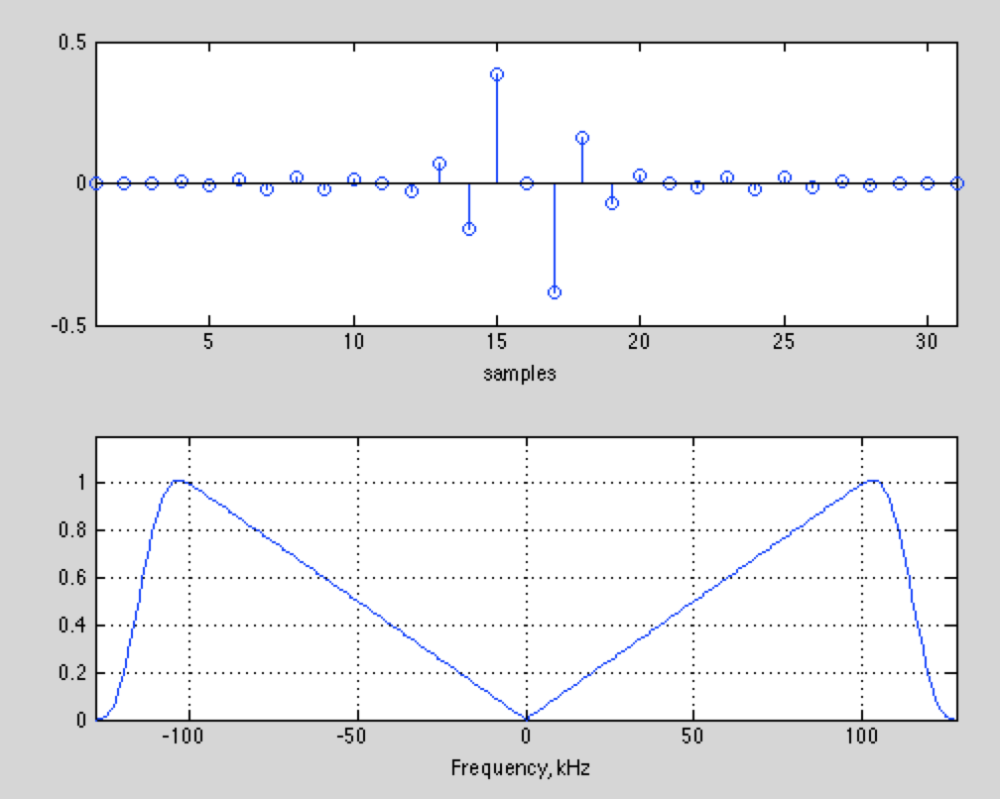

Lab 5: Commercial FM#
(Adapted from Dr. John Pauly’s Stanford University EE179 course website: https://web.stanford.edu/class/ee179/Homework.html.)
Overview#
So far we’ve looked at narrowband FM. This has a bandwidth of +/- 2.5 kHz, which is just find for voice communications, or low data rate digital voice or data. Music doesn’t sound very good at these rates, so the familiar commercial FM band has much wider channels with bandwidths of +/- 100 kHz. This is much more than actually required for the +/- 15 kHz that is the limit of human hearing (mine is much less!). This extra bandwidth has been exploited in many different ways. In this lab we’ll look at the technical archaeology of the FM signal. This includes the original mono band, the stereo signal, additional audio channels hidden on subcarriers, data channels, and high definition (HD) digital radio.
Aims of the Lab#
The goal of this lab are to decode commercial FM signals, and find and identify all of the different signals that are hidden inside it. This week we’ll just go after the mono channel.
One of the potential projects for the course is to go after the stereo channel, and the pilot reference channel that allows us to produce high fidelity stereo audio.
Capturing Commercial FM Signals#
First, we need to capture some signals to play with. Capture 10 seconds of data centered at 105.3 MHz, sampled at 2.048 MHz. This will include a number of high SNR stations that have interesting signals to look at. Also, capture 10 second of data for KPFA at 94.1 MHz. This has some unusual signals that we will look at first. As usual, the capture is done with
> ./rtl_sdr -f 105300000 -s 2048000 -n 20480000 wfm1053_10s.dat
where the “>” character is your command line prompt, and will undoubtedly be something different (this is what I set it to). These are strong enough signals we can tune to the stations directly, and not worry about the DC artifact.
Two example files are
wfm941_10s.dat
wfm1053_10s.dat
in case you are having trouble picking up good signals.
First, look at a spectrogram of the signals, to see what is out there. If you look at the spectrogram centered at 94.1 MHz, you will see something like this
The total bandwidth is 2.048 MHz. The FM channels are 200 kHz in width, and normally only alternate channels are allocated in one geographic area. As a result, we see five clear channels. The spectra look very different, and we’ll see why when we decode them. All of these are analog commercial FM signals.
The spectrogram centered at 105.3 MHz looks a little different
This part of the spectrum is more densely occupied. Several of the spectra here are very different. Again, we’ll see why shortly. More interesting are the square gray stripes. These are digital, or HD, radio. These are increasingly common, as HD radio becomes more popular in new cars. There is a stark contrast between the analog FM signals and the digital HD signals. Digital signals look like noise with a very well defined bandwidth, because they maximally exploit the frequency band they are allocated. Actually, two HD channels can exist in one of these stripes. Analog FM, on the other hand, is less efficient. You can clearly identify the signal that is being encoded from the spectrogram. There is lots of empty space in the analog FM signal spectrogram, that could be used to encode other information. However, even the analog FM channels encode lots of different signals!
If your spectra aren’t as clean, it may be that your sdr is saturating. What you’ll see is your spectrum at DC, plus ghosts of the spectrum. It looks like this for 94.1 MHz
The top spectra is a distorted copy of the middle spectra. Most of the other signals are gone. Interestingly, you can still decode the signal at 94.1 MHz fairly reasonably, but the other signals are seriously corrupted. You can fix this by manually setting the gain of the sdr. If you run ‘rtl_test’ it will report the gains that are available. Then use the ’-g’ switch to set one of these for ‘rtl_sdr’. For example, I used ’-g 40.7’ for the data files available above. You may need even less gain, depending on where you are, and how well these stations come in.
Initial Decimation#
We’ll start by going after the signals where we centered the receiver (94.1 MHz, and 105.3 MHz). We can also go after the other signals, but we’ll have to demodulate them to baseband first, just as we did with the narrowband signals last week. Since the signals are all separated by multiples of 200 kHz, this is pretty easy to do.
We are sampling at 2.048 MHz, and the signal bandwidths are 200 kHz, so we need to decimate by a factor of about 10. We are going to want to process the signal right out the the +/- 100 kHz band edge, so we will want to sample a little above this to make the filters easy to design. Load your data file, and decimate it down by a factor of 8, to give you a sampling frequency of 256 kHz, or a signal bandwidth of +/- 128 kHz.
> drf = loadFile('wfm1053_10s.dat'); % Load RF Data
> d = decimate(drf,8,'fir'); % decimate to 256 kHz
For the 94.1 MHz data, the spectrogram should look like this
There is lots of intriguing structure in this spectrogram! In particular, why are there three almost parallel copies of the spectrum superimposed? This will be clearer after we do the FM detection.
FM Decoding#
Last week we used a simple method for decoding the FM signal. If the decimated data was in ‘d’, then
> dfm = angle(conj(d(1:end-1)).*d(2:end))));
where the angle() command could be replaced by imag(). The reason this works is the conj(d(1:end-1)) operator negates the phase of d. After the dot product with the delated signal d(2:end), we get the product of the magnitudes (which we don’t care about), and the difference of the phases (which has the FM data). Taking the angle extracts the FM data, while ignoring the amplitude variation.
The problem with this for the commercial FM signal is that a first difference operation is only a good approximation to a differentiator for frequencies that are much less than the sampling rate. In this case we want to extract FM signals right out the the band edge, so we need a better processing scheme. Assume we have demodulated one sideband of the FM signal, so our RF data is \(d(t) = a(t) e^{j (2\pi f_c t + k\int_0^t m(s)ds)}\) where \(m(t)\) is the FM signal. If we demodulate to center the FM signal, then \(f_c = 0\), and we can drop that term, leaving us with \(d(t) = a(t) e^{j k\int_0^t m(s) ds}\). The leading coefficient \(a(t)\) is variation in the signal amplitude, which doesn’t carry any useful information. We’ll first divide that out. This does what the limiter does in the block diagrams we looked at in class.
> dl = d./abs(d); % Eliminate amplitude variations
We didn’t need this last time because of the way we directly differentiated the phase, and then extracted the angle. This time we have to eliminate this variation first. Our signal now is \(d_l(t) = e^{j k \int_0^t m(s)ds}\).
What we really want is \(m(t)\). We can get this by computing
Hence, we just take our limited signal \(d_l(t)\), differentiate it, and multiply it by the conjugate of the original signal, and we get the message signal in the imaginary channel.
The only trick is doing a good job of differentiation. We’ll do that with an FIR filter. You can skip the next paragraph if you aren’t interested in the details. The impulse response for a differentiator is included below.
There are a number of MATLAB routines that design differentiators. I like firls() which designs FIR filters using a least squares error criteria. Another is firpm() that designs minimax (equalripple) filters. However, there are some oddities. Look at the documentation for firls() to see what it does. We want a differentiator with an odd length, so that it will have perfectly linear phase (an even length differentiator will have a half sample delay). For our needs, a differentiator of length 31 should do. That means we want to ask for a design of order 30! The filter is always one sample longer than the order we ask for. The next argument to firls() is an array with the band edges. We want the differentiator to go from 0 Hz to 100 kHz and don’t care what it is from 100 kHz to 128 kHz. We’ll just specify a narrow stop band right at 128 kHz, since it has to go through zero there anyway. Frequencies are normalized to half the sampling rate (another oddity) so we divide by that. Next, we need an array to specify the amplitudes at the band edges. That is 0 and 0 Hz, 1 at 100 kHz, and 0 in the stop band. The final argument is the type of filter we what, so we specify ‘differentiator’.
> %
> % design the differentiator
> %
> hd = firls(30,[0 100000 127000 128000]/128000, [0 1 0 0],'differentiator');
> %
> % Plot the filter, and its frequency response
> %
> subplot(211);
> stem(hd);
> subplot(212);
> f = [-128:127];
> plot(f,abs(fftshift(fft([hd zeros(1,256-31)]))));
The result should look like this

The response is very linear, right out to 100 kHz. We’ve plotted the absolute value. The response for negative frequencies is actually negative, so that the response is linear from -100 kHz to 100 kHz.
If you don’t have the MATLAB signal processing toolbox, or are using octave, this filter is available here for your convenience:
With the FIR differentiator, we can extract the FM signal with the command
> df = imag(conv(dl,hd,'same').*conj(dl));
The ‘same’ argument to conv() just keeps the central portion of the convolution (the middle 20480000 samples out of the 20480030 samples from the convolution, no one will miss those 30 samples!). This makes the dot product work without a complaint.
KPFA and Subcarriers#
The spectrogram of the result looks like this for the 94.1 MHz data
This is a lot simpler spectrogram than the previous one. We see lots of different signals. The spectral components are
Right in the middle is the mono signal, corresponding to the left+right stereo signal. The stereo signal is transmitted at L-R, centered at 38 kHz. There isn’t much energy in the L-R channel here. The stereo decomposition depends critically on the phase between the L+R and L-R channels. To make that easy to determine, a pilot signal is transmitted at 19 kHz to use as a reference.
We can decode and play the mono signal by decimating by a factor of 16 to a bandwidth of 256/16 = 16 kHz, and playing the result. We’ll decimate in two stages to be safe,
> dfd = decimate(decimate(df,8,’fir’),2,’fir’);
> dfd = dfd / max(abs(dfd));
> sound(dfd,16000);
This should sound pretty good. The signal has too much high frequency emphasis, because we haven’t compensated for the equalization we talked about in class.
In addition, there are two other signals in the spectrum, centered at 67 kHz, and 92 kHz. These are subsidiary communications authorization (SCA) services. The FCC specifically doesn’t regulate the FM band from 57 kHz up to 100 kHz, only requiring that whatever you transmit there doesn’t interfere with the principle FM signal. For a long time this extra spectrum was used for Muzak, and other targeted FM signals. This has become less common with the advent of the internet, but there are still stations that use these channels. KPFA, which transmits on 94.1 MHz from Berkeley, transmits a Hatian-French subchannel at 67 kHz, and a Punjabi subchannel at 92 kHz.
Oddly enough, the subchannels themselves are FM encoded. This is like the Russian Matrushka dolls, with one inside another. Fortunately, you have all the tools you need to decode these signals! Start with the FM decoded signal df for 94.1 MHz. Demodulate the subcarrier frequencies of 67 kHz, and 92 kHz. Detect the FM signals (the methods you used last time for narrowband FM work fine here), and play back the audio. You will want to decimate to a bandwidth of 8kHz. In your lab report, describe what you hear (music, news, adds, interviews, etc).
Wideband FM Receiver#
Write an m-file that takes the RF data sampled at 2.048 MHz, demodulates a specified channel, and returns the mono component of the FM signal. Use this m-file to decode several of the other signals in the data files you captured.
Lab Report#
Upload to Gradescope a description of what you hear on the two KPFA subcarriers.
Demodulate at least two other FM channels in the data you captured (or the data sets provided above), and describe what their frequencies are, and what they are broadcasting.